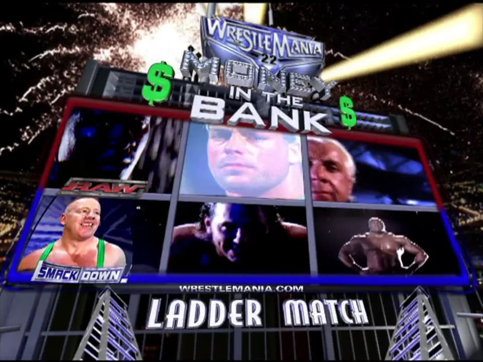
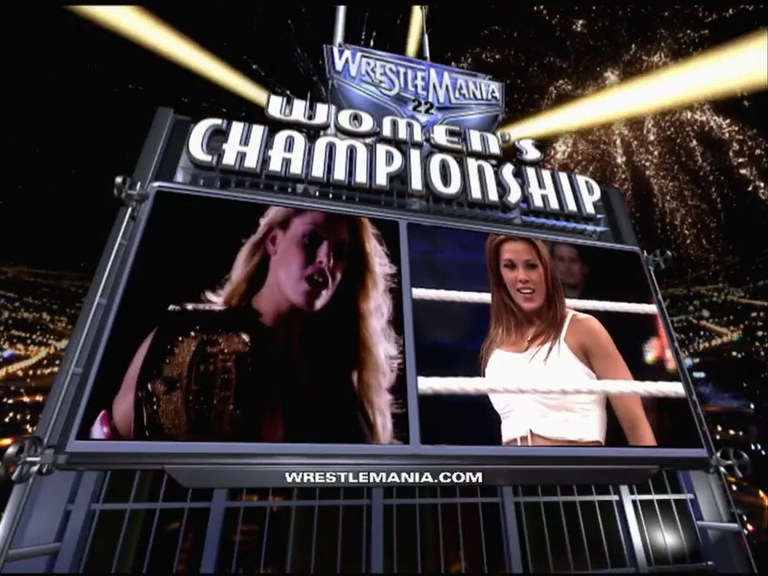
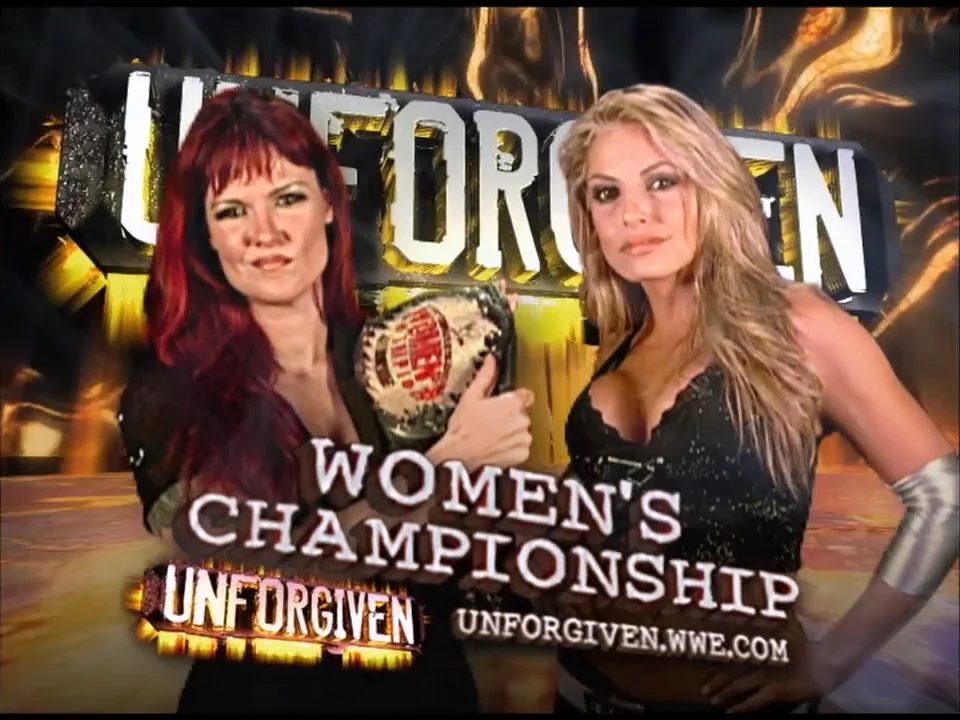

WrestleMania 22 Money in the Bank Ladder Match
WWE WrestleMania 22: Big Time - 2/4/2006

Compared to the previous year's ladder match, a bit of a disappointment, but still really good. RVD is really over here and the crowd is fully behind him. Shelton does an epic ladder run Swanton to the outside early on, fuck he was so good at ladder matches. 57-year-old Flair takes a huge suplex off the ladder and the ref throws up a worked X sign, interesting to see in 2006 as they only really started doing this spot recently. RVD rolls thunder onto a ladder which looks very nasty. Crowd is not behind Lashley at all when he starts climbing, but Shelton does another wicked jump over the ladder to powerbomb him along with Finlay and Matt Hardy. Finlay takes everyone out with a ladder, and then for some reason decides to knock the other ladder over instead of attempt to climb it. Flair comes back and takes another bump off the ladder, then does nothing for the rest of the match. Lashley again tries to climb but takes a dropkicked chair to the back from RVD. Some more attempts and RVD hits a frogsplash off the ladder to Finlay. RVD climbs but Shelton does a perfect jump from the ropes onto the ladder and beats on him. Looked incredible. Hardy comes up on a separate ladder and Benjamin moves between both, until RVD boots them both off and wins. Benjamin was easily the MVP of this match, RVD also did great and Flair's spot was just fucking weird.
Rating: 3.75
Recommended if you're a fan of the 2006 IC title scene.
Mickie James vs. Trish Stratus
WWE WrestleMania 22: Big Time - WWE Women's Title Match - 2/4/2006

Mickie's crazy stalker character is probably my favourite women's gimmick in WWE's history - the one time they had a lesbian character that didn't feel specifically catered to the guys in the audience. Lol at JR making pedo jokes about Jerry before the match even starts. Crowd is completely behind Mickie even though she's a heel, which both commentators notice and point out, which is cool. She works Trish's leg and keeps up the "psycho" persona really well, even as she does moves. Her skirt is extremely short and it shows every time she gets pinned. We get the famous vagina grab and V spot, which was censored from later versions of the match. We almost get a women's match without a botch but unfortunately the finishing Stratusfaction Mickie attempts at the end completely misses and she just ends up kicking her in the face to get the win. Decent technically and great character work throughout.
Rating: 3.5
Recommended to see the first great women's match at Mania.
Trish Stratus vs. Lita
WWE Unforgiven 2006 - WWE Women's Title Match - 17/9/2006

Very fitting sendoff (or so we thought) for Trish, who puts to bed her rivalry with Lita and decisively wins with a feel-good Canadian Sharpshooter. Even though the women's division was complete shit in this period, they clearly still had respect for Trish and she looks very strong here (even Lawler managed to shut up about puppies for a while). Nice looking offense and no botches, but a lack of big spots besides the ending drag it down a bit.
Rating: 4
Recommended to see the conclusion of the best Divas rivalry ever.